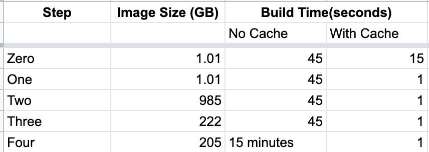

Introduction
When using Docker, if the build is taking time or the build image is huge, it will waste system resources as well as our time. In this article, let's see how to reduce build time as well as image size when using Docker for Python projects.
Project
Let us take a hello world application written in flask.
import flask
app = flask.Flask(__name__)
@app.route('/')
def home():
return 'hello world - v1.0.0'
Let's create a requirements.txt file to list out python packages required for the project.
flask==1.1.2
pandas==1.1.2
Pandas binary wheel size is ~10MB. It is included in requirements to see how python packages affect docker image size.
Here is our Dockerfile to run the flask application.
FROM python:3.7
ADD . /app
WORKDIR /app
RUN python -m pip install -r requirements.txt
EXPOSE 5000
ENTRYPOINT [ "python" ]
CMD [ "-m" "flask" "run" ]
Let's use the following commands to measure the image size & build time with/without cache.
$ docker build . -t flask:0.0 --pull --no-cache
[+] Building 45.3s (9/9) FINISHED
$ touch app.py # modify app.py file
$ docker build . -t flask:0.1
[+] Building 15.3s (9/9) FINISHED
$ docker images | grep flask
flask 0.1 06d3e985f12e 1.01GB
With the current docker, here are the results.

1. Install requirements first
FROM python:3.7
WORKDIR /app
ADD ./requirements.txt /app/requirements.txt
RUN python -m pip install -r requirements.txt
ADD . /app
EXPOSE 5000
ENTRYPOINT [ "python" ]
CMD [ "-m" "flask" "run" ]
Let us modify the docker file to install requirements first and then add code to the docker image.

Now, build without cache took almost the same time. With cache, the build is completed in a second. Since docker caches step by step, it has cached python package installation step and thereby reducing the build time.
2. Disable Cache
FROM python:3.7
WORKDIR /app
ADD ./requirements.txt /app/requirements.txt
RUN python -m pip install -r requirements.txt --no-cache
ADD . /app
EXPOSE 5000
ENTRYPOINT [ "python" ]
CMD [ "-m" "flask" "run" ]
By default, pip will cache the downloaded packages. Since we don't need a cache inside docker, let's disable pip cache by passing --no-cache argument.

This reduced the docker image size by ~20MB. In real-world projects, where there are a good number of dependencies, the overall image size will be reduced a lot.
3. Use slim variant
Till now, we have been using defacto Python variant. It has a large number of common debian packages. There is a slim variant that doesn't contain all these common packages. Since we don't need all these debian packages, let's use slim variant.

This reduced the docker image size by ~750 MB without affecting the build time.
4. Build from source
Python packages can be installed via wheels (.whl files) for a faster and smoother installation. We can also install them via source code. If we look at Pandas project files on PyPi, it provides both wheels as well as tar zip source files. Pip will prefer wheels over source code the installation process will be much smoother.
To reduce Docker image size, we can build from source instead of using the wheel. This will increase build time as the python package will take some time to compile while building.

Here build size is reduced by ~20MB but the build has increased to 15 minutes.
5. Use Alpine
Earlier we have used, python slim variant the base image. However, there is Alpine variant which is much smaller than slim. One caveat with using alpine is Python wheels won't work with this image.
We have to build all packages from source. For example, packages like TensorFlow provide only wheels for installation. To install this on Alpine, we have to install from the source which will take additional effort to figure out dependencies and install.
Using Alpine will reduce the image size by ~70 MB but it is not recomended to use Alpine as wheels won't work with this image.

All the docker files used in the article are available on github.
Conclusion
We have started with a docker build of 1.01 GB and reduced it to 0.13 GB. We have also optimized build times using the docker caching mechanism. We can use appropriate steps to optimize build for size or speed or both.